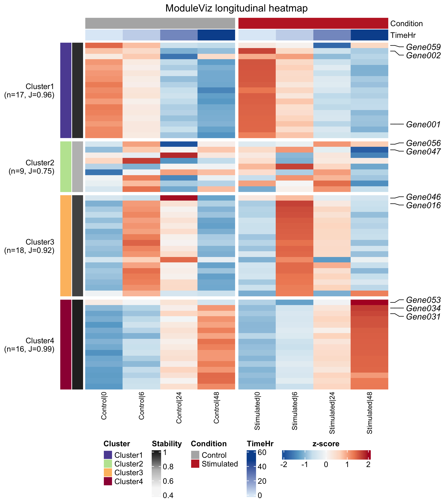
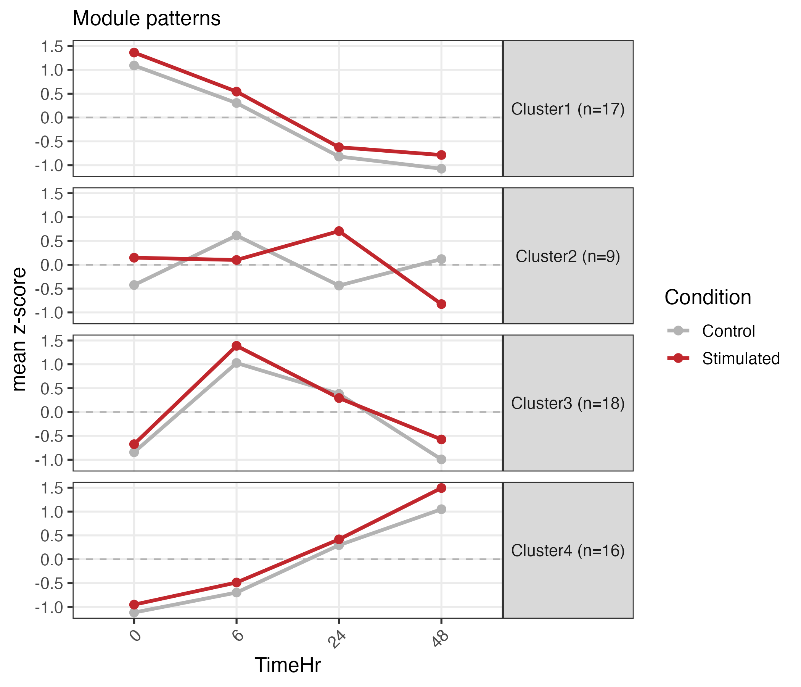
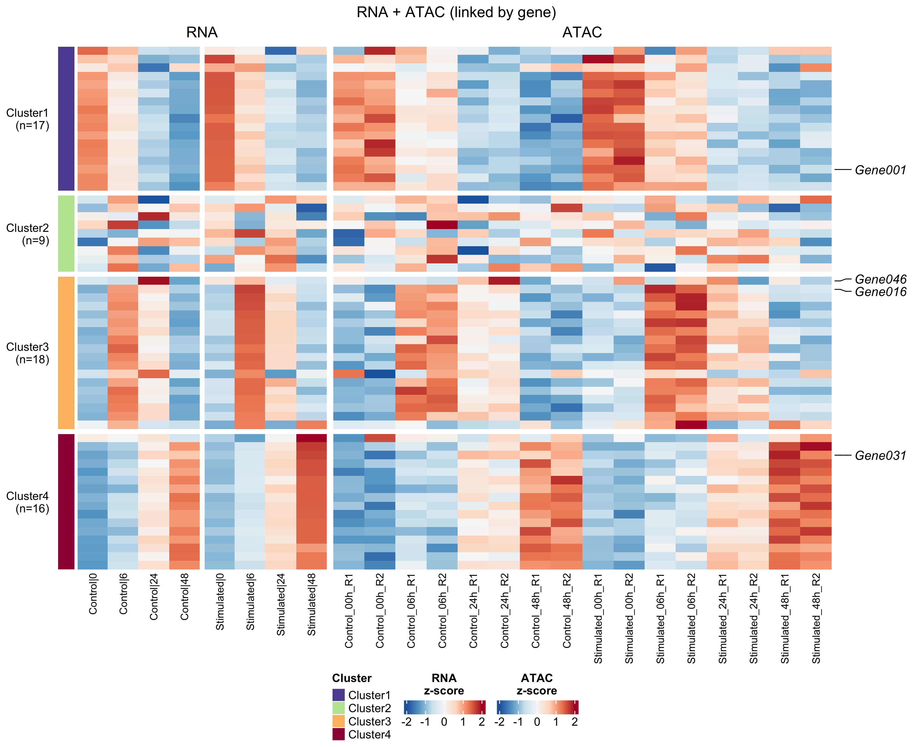
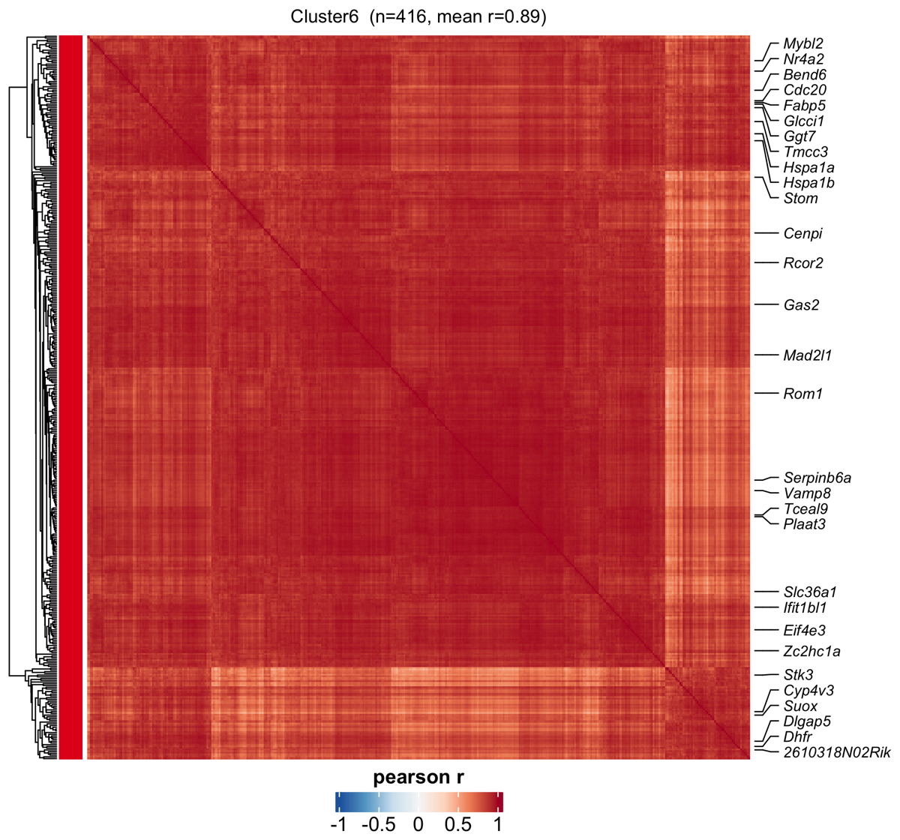
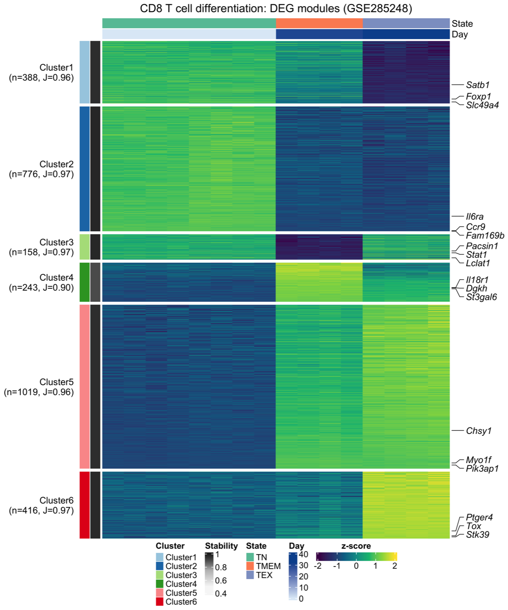
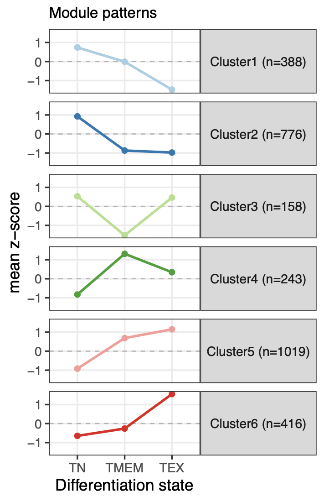
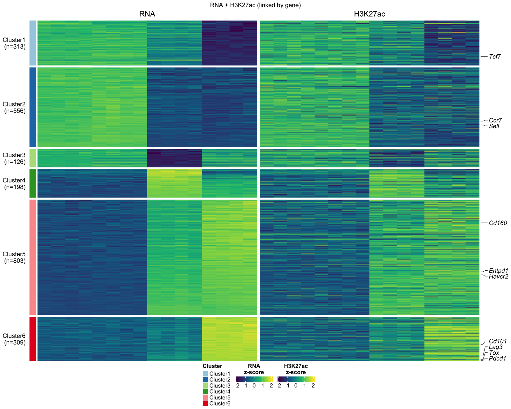
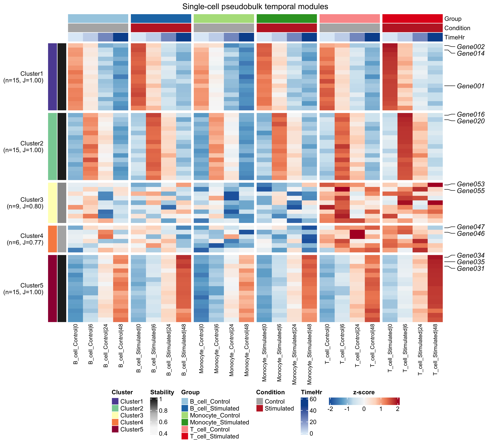
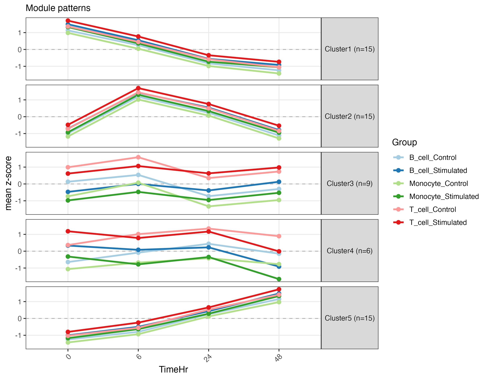

Source: vignettes/ModuleViz.Rmd
ModuleViz is an R package for clustering and visualizing
longitudinal high-throughput omics data. It is designed for
feature-by-sample matrices from RNA-seq, ATAC-seq, CUT&Run,
pseudobulk single-cell summaries, and related time-course or
ordered-state experiments.
The central question addressed by ModuleViz is: which
genes, peaks, or other features follow similar temporal patterns across
an ordered biological axis? The axis can be clock time, treatment dose,
differentiation state, disease stage, exhaustion state, or another
numeric ordering supplied by the user.
ModuleViz takes a numeric matrix and sample metadata
table, z-scores features by row, clusters features into temporal
modules, orders modules from early-peaking to late-peaking patterns, and
renders the result as heatmaps, module trajectory plots, paired-omics
heatmaps, and module coherence diagnostics. Heatmaps are drawn with ComplexHeatmap,
so the package fits naturally into Bioconductor workflows.
The main functions are:
longitudinal_cluster(): cluster features into ordered
temporal modules.longitudinal_heatmap(): draw annotated module
heatmaps.pattern_lineplot(): plot mean module trajectories.dual_omics_heatmap(): align a second omics layer, such
as ATAC or CUT&Run, to RNA-defined modules.module_correlation_heatmap(): inspect gene-gene
correlation within modules.module_correlation_summary(): summarize within-module
coherence.choose_k(): calculate module-number diagnostics.cluster_stability(): estimate module reproducibility by
resampling.write_memberships(): export feature-to-module tables
and module summaries.run_longitudinal(): run clustering, plotting, and
export in one call.ModuleViz is currently available from GitHub. Install
the required Bioconductor dependencies first:
if (!requireNamespace("BiocManager", quietly = TRUE))
install.packages("BiocManager")
BiocManager::install(c("ComplexHeatmap", "circlize"))
install.packages(c("cluster", "data.table", "ggplot2", "RColorBrewer",
"remotes"))
remotes::install_github("helenhuangmath/ModuleViz")Optional packages are used for vignettes, examples, and package checks:
BiocManager::install(c("BiocStyle", "timecoursedata"))
install.packages(c("knitr", "rmarkdown", "testthat"))For local development from a checked-out repository:
devtools::load_all(".")The quick example below uses the bundled heatmap_example
dataset. The matrix contains features in rows and samples in columns.
The metadata table contains one row per sample and identifies sample ID,
time, condition, and replicate.
library(ModuleViz)
data("heatmap_example")
mat <- heatmap_example$mat
meta <- heatmap_example$meta
obj <- longitudinal_cluster(
mat,
meta,
sample_col = "SampleID",
time_col = "TimeHr",
group_col = "Condition",
k = 4,
method = "kmeans",
aggregate_replicates = TRUE,
stability = TRUE
)
longitudinal_heatmap(
obj,
annotation_cols = c("Condition", "TimeHr"),
top_n_label = 3,
cluster_palette = "paired",
title = "Example longitudinal modules",
file = "moduleviz_heatmap.pdf"
)The resulting object is a longi list containing the
z-scored matrix, ordered module assignments, module centroids, stability
estimates, reordered metadata, and the parameters used to create the
result.
This section follows the same workflow used in the package vignettes.
library(ModuleViz)
library(data.table)ModuleViz requires two plain R objects:
The metadata must contain a sample ID column matching the matrix column names and a numeric ordering column. A grouping column is optional and can represent condition, genotype, treatment, cell type, or another factor.
dim(mat)
head(meta)Values are z-scored by row inside longitudinal_cluster()
unless is_zscore = TRUE is supplied. Feature selection
should be done upstream, using differential analysis, a variance filter,
or another criterion suitable for the experiment.
choose_k() calculates an elbow diagnostic and mean
silhouette width across a range of candidate module numbers.
diag <- choose_k(
zscore_rows(mat),
k_range = 2:10,
method = "kmeans",
chosen_k = 4,
file = "choose_k_elbow.pdf"
)
diag
attr(diag, "suggested_k")The elbow estimate is a diagnostic. The final module number should also reflect biological interpretability and module stability.
obj <- longitudinal_cluster(
mat,
meta,
sample_col = "SampleID",
time_col = "TimeHr",
group_col = "Condition",
k = 4,
method = "kmeans",
stability = TRUE,
n_resample = 20,
seed = 1
)
obj
obj$stabilityModules are automatically ordered by the time point where each module
centroid peaks. Cluster1 is therefore the earliest-peaking
module and the last cluster is the latest-peaking module.
longitudinal_heatmap(
obj,
annotation_cols = c("Condition", "TimeHr"),
top_n_label = 3,
zscore_palette = "rdbu",
cluster_palette = "paired",
annotation_palette = "set2",
file = "moduleviz_heatmap.pdf",
width = 9,
height = 12
)
Rows are split by module and ordered from early-peaking to late-peaking patterns. Columns are ordered by the numeric time variable and can be split by the optional grouping variable. Metadata columns are shown as annotation bars.
pattern_lineplot(
obj,
palette = "set2",
file = "moduleviz_patterns.pdf"
)
The line plot shows the mean z-score trajectory for each module and is useful for describing module behavior in text.
write_memberships(obj, prefix = "moduleviz")This writes:
moduleviz_memberships.txtmoduleviz_centroids.txtmoduleviz_stability.txtThe membership table can be used for downstream enrichment analysis one module at a time.
The examples below describe each exported function and the object it
expects. They use the same heatmap_example data introduced
above unless noted otherwise.
zscore_rows()zscore_rows() centers and scales each feature across
samples. It is called inside longitudinal_cluster(), but it
is useful when checking diagnostics or preparing input for
choose_k().
z <- zscore_rows(mat)
round(rowMeans(z)[1:5], 6)
round(apply(z, 1, sd)[1:5], 6)Rows with zero variance are returned as zero rather than
NaN, so they do not break clustering.
choose_k()choose_k() evaluates candidate module numbers. The
returned table contains the total within-cluster sum of squares and mean
silhouette width for each k. The attribute
suggested_k stores the elbow estimate.
diag <- choose_k(
z,
k_range = 2:8,
method = "kmeans",
chosen_k = 4,
file = "choose_k_elbow.pdf"
)
attr(diag, "suggested_k")Use this as a diagnostic, then choose a value that gives stable and interpretable modules.
longitudinal_cluster()longitudinal_cluster() is the core analysis function. It
checks the matrix and metadata, z-scores rows, optionally aggregates
replicates, clusters features, orders modules, orders rows within
modules, and stores metadata needed by the plotting functions.
obj <- longitudinal_cluster(
mat,
meta,
sample_col = "SampleID",
time_col = "TimeHr",
group_col = "Condition",
k = 4,
method = "kmeans",
aggregate_replicates = TRUE,
stability = TRUE,
n_resample = 20,
seed = 1
)
names(obj)
head(obj$membership)Supported clustering methods are "kmeans",
"hierarchical", and "pam". Set
dist_method = "correlation" when trajectory shape is more
important than amplitude.
cluster_stability()cluster_stability() estimates how reproducible each
module is by subsampling features, reclustering, and calculating the
best Jaccard overlap with the original module.
stab <- cluster_stability(
obj$z,
obj$cluster,
k = 4,
method = "kmeans",
n_resample = 20,
seed = 1
)
stabHigh values indicate modules that are robust to feature subsampling. Values below roughly 0.6 should be interpreted cautiously.
resolve_labels()resolve_labels() determines which rows will be labeled
on a heatmap. Labels can come from an explicit feature list, from the
top features per module by signal strength, or from a user-supplied
ranking table.
rank_table <- data.frame(
ID = rownames(obj$z),
value = runif(nrow(obj$z))
)
labels <- resolve_labels(
obj,
features = c("Gene001", "Gene016"),
top_n = 2,
rank_table = rank_table,
id_field = "ID",
value_field = "value"
)
head(labels)The returned table is used internally by
longitudinal_heatmap().
longitudinal_heatmap()longitudinal_heatmap() draws the main module heatmap.
Rows are split by ordered module, columns are ordered by
time_col, and selected metadata columns become top
annotation bars.
longitudinal_heatmap(
obj,
annotation_cols = c("Condition", "TimeHr"),
top_n_label = 3,
zscore_palette = "rdbu",
cluster_palette = "paired",
annotation_palette = "set2",
show_column_names = TRUE,
file = "moduleviz_heatmap.pdf"
)Use zscore_palette = "viridis" for a perceptually
uniform heatmap body, and use annotation_colors when exact
metadata colors are needed.
pattern_lineplot()pattern_lineplot() returns a ggplot object
showing the mean trajectory of each module.
p <- pattern_lineplot(
obj,
palette = "set2",
base_size = 12,
title = "Module trajectories"
)
pWhen group_col was supplied to
longitudinal_cluster(), each group is drawn as a separate
colored line.
module_correlation_summary()module_correlation_summary() returns a compact table of
within-module correlation statistics.
module_correlation_summary(obj)This is useful for identifying modules that may contain multiple subprograms.
module_correlation_heatmap()module_correlation_heatmap() draws feature-feature
correlation heatmaps within one or more modules.
module_correlation_heatmap(
obj,
clusters = "Cluster1",
max_genes = 60,
label_top_n = 20,
file = "module_correlation.pdf"
)A .pdf file collects multiple modules as pages. Other
extensions write one file per module.
dual_omics_heatmap()dual_omics_heatmap() aligns a secondary assay to the
primary module order by gene. The primary layer defines the modules; the
secondary layer is displayed in the same gene order.
genes <- rownames(mat)
atac <- mat[rep(seq_along(genes), each = 2), , drop = FALSE]
rownames(atac) <- paste0(
"Peak",
sprintf("%03d", seq_len(nrow(atac))),
"_",
rep(genes, each = 2)
)
dual_omics_heatmap(
primary = obj,
secondary = atac,
primary_name = "RNA",
secondary_name = "ATAC",
gene_of_primary = function(id) id,
gene_of_secondary = function(id) sub("^.*_", "", id),
aggregate = "mean",
file = "rna_atac_heatmap.pdf"
)Use aggregate = "top" when the strongest secondary
feature per gene is more appropriate than the mean.
write_memberships()write_memberships() exports module assignments and, by
default, module centroids and stability estimates.
write_memberships(obj, prefix = "moduleviz")The exported membership table is the usual input for downstream gene set, pathway, or motif enrichment analyses.
run_longitudinal()run_longitudinal() is a convenience wrapper for a
finalized workflow. It runs clustering, writes the heatmap, writes the
trajectory plot, and exports membership tables.
run_longitudinal(
mat,
meta,
out_prefix = "moduleviz",
sample_col = "SampleID",
time_col = "TimeHr",
group_col = "Condition",
k = 4,
top_n_label = 3
)Use the lower-level functions during exploration, then switch to
run_longitudinal() when parameters are settled.
available_real_timecourse_datasets() and
load_real_timecourse_example()These helpers expose optional public datasets from the Bioconductor
timecoursedata package.
available_real_timecourse_datasets()
example <- load_real_timecourse_example(
dataset = "sorghum_leaf",
genotype = "BT642",
min_week = 3,
top_n_features = 1000
)The returned object contains mat, meta, and
the column names to pass to longitudinal_cluster().
dual_omics_heatmap() compares two assays in a shared row
order. The primary layer, often RNA, defines the module structure. The
secondary layer, such as ATAC or CUT&Run, is aligned by gene and
shown beside the primary layer.
rna_obj <- longitudinal_cluster(
rna,
meta,
sample_col = "SampleID",
time_col = "TimeHr",
group_col = "Genotype",
k = 10
)
dual_omics_heatmap(
primary = rna_obj,
secondary = atac,
primary_name = "RNA",
secondary_name = "ATAC",
gene_of_secondary = function(id) sub("^.*_", "", id),
aggregate = "mean",
label_features = c("Sox2", "Pax6"),
file = "rna_atac_heatmap.pdf"
)
When multiple secondary features map to one gene,
aggregate = "mean" averages them and
aggregate = "top" keeps the strongest feature.
Temporal clustering can group features with similar average profiles, but a module should still be checked for internal coherence. The correlation helpers summarize and visualize feature-feature agreement within each module.
module_correlation_summary(obj)
module_correlation_heatmap(
obj,
clusters = "Cluster1",
max_genes = 60,
file = "module_correlation.pdf"
)
A coherent module appears as a high-correlation block. Visible
sub-blocks can indicate that the module should be split by increasing
k.
The vignette vignette("cd8-exhaustion-published-data")
demonstrates a published-data workflow using RNA-seq and CUT&Run
data from memory and exhausted CD8 T cells. RNA-seq defines the modules
and H3K27ac signal is aligned to those modules by gene.



Single-cell data can be summarized into pseudobulk profiles by
sample, cell type, condition, time point, and replicate. The resulting
matrix can be analyzed with the same ModuleViz
functions.
source("examples/example_single_cell_pseudobulk.R")

The optional helper load_real_timecourse_example() loads
supported public datasets from the Bioconductor
timecoursedata package and returns a matrix and metadata
table ready for ModuleViz.
available_real_timecourse_datasets()
example <- load_real_timecourse_example(
dataset = "sorghum_leaf",
genotype = "BT642",
min_week = 3,
top_n_features = 1000
)
obj <- longitudinal_cluster(
example$mat,
example$meta,
sample_col = example$sample_col,
time_col = example$time_col,
group_col = example$group_col,
k = 5,
aggregate_replicates = TRUE,
stability = TRUE
)See examples/example_real_timecoursedata.R and
vignettes/longitudinal-heatmap-tutorial.Rmd for a complete
workflow.
The package includes three Bioconductor-style vignettes:
vignette("ModuleViz"): complete user guide.vignette("cd8-exhaustion-published-data"): published
RNA-seq and CUT&Run workflow.vignette("longitudinal-heatmap-tutorial"): tutorial
using bundled and optional public time-course data.HTML versions are available in docs/:
docs/index.html: HTML README/package overview.docs/articles/ModuleViz.html: complete user guide.docs/articles/cd8-exhaustion-published-data.html:
published-data workflow.docs/articles/longitudinal-heatmap-tutorial.html:
longitudinal heatmap tutorial.Before Bioconductor submission, run checks from a clean R/Bioconductor environment with all required and suggested dependencies installed:
R CMD build .
R CMD check --no-manual ModuleViz_*.tar.gzRun Bioconductor-specific checks:
if (!requireNamespace("BiocManager", quietly = TRUE))
install.packages("BiocManager")
BiocManager::install("BiocCheck")
BiocCheck::BiocCheck(".")After installation, cite ModuleViz from R with:
citation("ModuleViz")ModuleViz is distributed under the MIT license.